Managing capital expenditure
Does it hurt?
Capital spending can be tangible or intangible. It can be on machines that you can touch and feel, or items of intellectual property such as software development and registering patents – stuff that is much harder to physically hurt yourself with.
What’s not capital
Under certain circumstances – especially if software is your business – you can treat software development as capital spending. Mostly, you cannot capitalize spending on research, start-ups, training and advertising, internally generated goodwill, brands, mastheads, publishing titles, customer lists and similar items.
Unlike most current expenditure, capital outlays are expected to produce benefits (and perhaps incur costs) in the future. These may be obvious and tangible, as with investment property or a clump press. Or the costs and benefits may be somewhat hard to measure, as in the instance of desktop computers for your beanies. Moreover, the future revenue and expenditure associated with assets may be straightforward (production machinery), or complex (as with mergers and acquisitions).
Approvals
The approvals process, as with any other spending request, will require you to show why you need the sprocket grinder, flange flipper or whatever asset it is, and what costs and benefits will relate to its acquisition. The uniqueness of capital spending is that the benefits – and some of the costs – are not all immediate, but they will occur at sometime in the future. Capital budgeting and related topics are covered in Chapter 22. Remember to consider alternative approaches to acquiring one asset, which may include alternative production methods, outsourcing, and leasing (see below).
Acquisition
For some assets, acquisition involves nothing more complex than taking delivery (passenger vehicles) or perhaps simple installation (plugging in a photocopier). For other items, such as a mainframe computer or a new building, acquisition may involve a separate project in its own right. Project management is discussed in Chapter 21.
Under international accounting standards, if you can demonstrate that a website is capable of generating direct revenues by enabling orders to be placed, you can treat the website development costs as capital spending. A website intended primarily for promoting and advertising your products and services does not qualify.
Costs associated with bringing an asset into use can usually be treated as part of the capital outlay. These overheads can include delivery, installation, perhaps computer software, and other items which would otherwise be treated as consumption. For construction projects, international accounting standards permit you to capitalize borrowing costs.
Expected life
You may find that your company has specific depreciation policies which arbitrarily define the expected life of certain categories of assets – such as two years for PCs. Many tax authorities define arbitrary lives for tax purposes. There may also be statutory limits, such as 20 or 40 years for buildings. Other examples are as follows. You do not have to use any of these periods for management analysis, but be prepared to defend your reasoning.
Machinery and equipment. Typical depreciation periods used in company accounts include three years for computers, five years for office equipment, 10 years for some industrial machinery, 20 years for a jumbo jet and 100 years for airport runways (I didn’t think that this last example was reasonable either).
Fitting of premises. Spending on fittings that you cannot take with you – fixed partitioning, plumbing, cabling, decorating – is treated as freehold improvements (if you own the premises) or leasehold improvements (if you rent). Such spending is amortized over the shorter of the life of the fittings, the lease or the building.
New US accounting rules requiring companies to record at once any decline in the value of goodwill resulted in AOL Time Warner posting a world-record one-time charge against profits in 2002 – with a $54bn write-down in the value of AOL’s purchase of Time Warner.
Goodwill. Goodwill is the difference between the price you pay to buy another company and the net value of its assets. It represents the expectation of future cash flow that can be generated by, for example, trading on a name or location. Your accounts cannot show the goodwill value that you attach to your own company. But if you are taken over, the acquiring company can show your goodwill and amortize it over up to 20 years (longer if they can justify expecting financial benefits to continue to flow in). Note that the 20-year rule is an international accounting standard; it has been more common for companies in Europe to write off goodwill immediately on acquisition by charging it to shareholders’ equity. (But see Chapter 19.)
Other intellectual property. The cost of acquiring patents, copyrights, trademarks and other licences is written off over their expected useful lives – which are often much less than the statutory protection afforded. A copyright, for example, generally lives for 50 years after the originator’s death. Will the works have such a long life? You would probably write off the copyright on a fleetingly famous celebrity’s novels over a much shorter period.
|
Running and maintenance costs
Fixed assets usually involve running costs and maintenance costs, which you will need to estimate for management analysis. These costs are usually entered as charges against profits in the periods when they are incurred, although in some circumstances you will be able to treat them as capital costs also and write them off over an extended period.
|
Residual value
As surprising as it may sound, accounting policies and common sense generally collide over the matter of estimating residual values – except that bean counters err on the side of caution and usually insist on writing book values down to zero within some given time period. In keeping with their reputation, they also prefer to call the residual value the salvage value because, well, it sounds rather more pessimistic. Use your knowledge of the market for similar assets, expectations of technological change, and other crystal-ball gazing to arrive at a reasonable estimate of what you can sell the asset for when you have finished with it.
If there are likely to be costs involved in the disposal of an asset at the end of its useful life, you probably have the option of including the estimated outlays in the ‘depreciation’ schedule or expensing them at the end of the period.
Benefits
At last we come to the whole purpose of acquiring assets – to obtain a future stream of revenue. This may be explicit, as with production machinery, or highly intangible, as with PCs for administrative use. The rationale for acquiring an asset came out of your planning and forecasting process. So will the benefits. These are discussed more fully in Chapter 21.
Depreciation
There are many ways to calculate depreciation. You may need to use one method for management analysis, another for financial reporting, and sometimes a third for tax calculations. This might sound a bit silly. The situation arises because tax authorities and financial accounting regulators do not always talk to each other, and both may have aims which differ from the manager’s objective of estimating the strict economic benefits. If nothing else, this illustrates that there is no universally applicable way of estimating depreciation.
In the US, both the Inland Revenue Service (IRS) and generally accepted accounting principles allow declining-balance depreciation – which the IRS calls Modified Accelerated Cost Recovery System (MACRS).
Let me explain three ways of calculating depreciation with a ruler. The first, the straight-line method introduced above, simply assumes an equal amount of depreciation in each year of the asset’s life. The next two, which may sound off-putting but which are delightfully simple, are known by bean counters as the sum-of-the-year’s-digits, and double-declining-balance depreciation. These are actually quite nifty techniques which accelerate (front-load) the depreciation. This is generally more realistic, given that the fastest drop in an asset’s value usually occurs precisely when you are heaving it out of the showroom. The calculations are as follows, using as an example a $10,000 asset with a five-year life and no residual value (see Fig. 11.2):
Straight-line. Divide the depreciable base (i.e. acquisition price less estimated residual value) by the number of years of expected service; e.g. depreciation is $10,000 / 5 = $2,000 a year.
Sum-of-the-year’s-digits. Number the years of useful life in reverse order counting down to one (e.g. 5, 4, 3, 2, 1). Find the sum (5 + 4 + 3 + 2 + 1 = 15). Divide each year by the sum (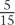,
 , 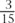, 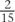 and 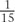) and multiply the depreciable base by these factors to find the depreciation. In the example here, depreciation in the first year is 10,000 × = $3,333. For the second year it is $10,000 × 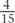 = $2,667 and so on.
, 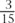, 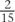 and 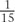) and multiply the depreciable base by these factors to find the depreciation. In the example here, depreciation in the first year is 10,000 × = $3,333. For the second year it is $10,000 × 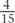 = $2,667 and so on.Double-declining-balance. Calculate the straight-line depreciation as above. Find the percentage depreciation in the first year, and double it (2,000/10,000 * 2 = 0.4 or 40%). Use this factor to calculate depreciation on the outstanding balance, but if the depreciation is less than the straight-line amount for the same period, use that amount instead, until the asset is completely written off. In this example, in the first two years the depreciation is 40% of the opening balance each year. However, in the third year, depreciation is higher when calculated using the straight-line method, so the straight-line figure is used.
Fig 11.2. Comparison of three depreciation methods
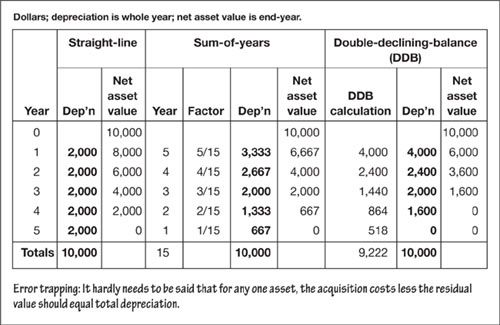
|
‘The general who wins the battle makes many calculations in his temple before the battle is fought. The general who loses makes but few calculations beforehand.’
—Sun Tzu
Back to the real world – units-of-production/output depreciation
If the depreciation methods outlined above seem artificial, it is because they are. A more rational approach is to pro-rata the depreciation according to the economic benefits that you expect to flow from an asset. For example, if you have a noisy machine that you estimate will punch out 20 million bottle tops in its lifetime and you predict that it will (or, with hindsight, you know that it did) produce 2 million in its first year of life, then depreciation for that period could be stated as 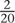 of the depreciable base amount.
|
Of course, it does not always make sense to do it this way. For motor vehicles, desktop PCs, and many other items not associated directly with production you will probably have to go back to depreciating with a ruler.
|
| If you develop computer software for sale, you may treat the development costs as capital spending, and then depreciate them over either the expected life of the software, or using a units-of-sale basis. For example, if you expected to sell 50 packages in total, and in the first year you sold 10, depreciation for the year would be 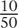 of the development costs. |
Going with the herd
You should review your fixed assets at regular intervals, and if the fair market value is out of line with the book value you should consider revaluing them. Market values can often be assessed by professional appraisers or by comparison with similar assets, although this is not always possible. For consistency, if you revalue one asset, you should revalue all assets in the same category.
The evolving international accounting standards (IAS) permit the use of fair market value as an alternative to mechanical depreciation, although your national generally accepted accounting principles may not yet do so. In fact, IAS have controversially moved away from historic cost and actually require the use of farm gate valuation for biological assets such as livestock, agriculture and forestry products.
|
Appreciating assets
There is no inverse of depreciation that can be applied to appreciating assets. In the past, land and buildings were usually recorded at cost and revalued upwards to reflect fair market values only in special exercises (such as when the CEO wanted to inflate income and the balance sheet). However, as mentioned above (see Going with the herd, above), international accounting standards permit regular revaluation based on fair market value.
Replacing fixed assets
Depreciation is a bookkeeping entry created at a stroke of the accountant’s pen. It does not establish a sinking fund or cash reserve for replacing an asset. If you wanted to do this, you would have to pass a separate set of entries – moving some of your profits from your bank account to a fixed-asset replacement fund each year. Then, of course, the cash in the fund would probably be earning less than your cost of capital and so it would be clawing down your overall return on capital employed (see Chapter 19). Such cash reserves tend to be the exception rather than the rule. You should decide if you need one using rational judgement and capital investment appraisal techniques (Chapter 21).